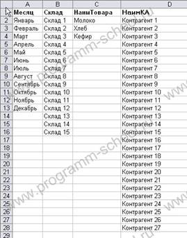
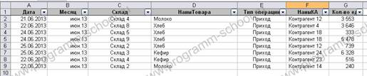
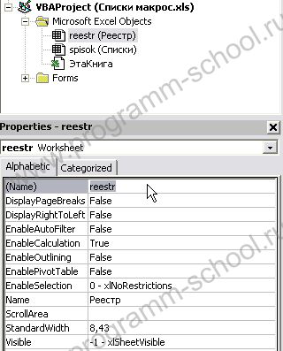
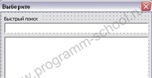
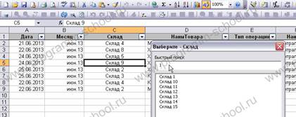

Создаем расширенный список выбора в Excel с помощью VBA
Автор: Deys
6-8 минут
В статье "Создание списка выбора в Excel 2003" были рассмотрены способы создания списков выбора, но в этих способах есть небольшое неудобство при работе с большими списками, а именно поиск нужного значения. В этой статье будет описан способ создания списков в Excel с помощью средств языка VBA, более универсальный, с реализованной возможностью быстрого поиска.
Задача: Создать форму выбора значений из списка и их вставка в ячейку. Вызов формы осуществляется только на определенных столбцах, при этом на каждый столбец отображается свой набор значений. Форма вызывается правой кнопкой мыши(ПКМ).
Приступим к реализации. Для начала нам необходимо создать списки значений на отдельном листе. Назовем этот лист "Списки".
Начиная с первого столбца, первой строки, создадим списки следующим образом:

где, первая строка - наименование списка.
Лист, в котором необходимо заполнение и выбор значений, назовем реестр и выглядеть будет так:

т.е. нам необходимо с помощью выбора из списка подставлять значения в столбцы : B, C, D, F.
Открываем редактор VB (Alt+F11)
В редакторе зададим нашим листам в окне "Properties" следующие имена:

Листу с реестром зададим имя - reestr.
Лист со списками же, получит имя - spisok.
Далее, создадим форму с именем (name) "SelectList", добавим на нее элементы Listbox и TextBox.
Имена для этих элементов следующие:
Listbox - List
TextBox - SearchText
В итоге получится форма следующего вида:

Теперь необходимо прописать процедуры в код нашей формы. Для этого выделите форму и нажмите F7, после чего вставьте следующий код:
'глобальные переменные
Public R, C, count As Long
Public SheetOut As String
Public numList As Byte
'Вставка значения двойным кликом в общем листе
Private Sub List_DblClick(ByVal Cancel As MSForms.ReturnBoolean)
If List.Text <> "" Then
Sheets(SheetOut).Cells(R, C) = List.Text
SelectList.Hide
End If
End Sub
'Вставка значения нажатием Enter в листе Результата поиска
Private Sub List_KeyPress(ByVal KeyAscii As MSForms.ReturnInteger)
If KeyAscii = 13 Then
If List.Text <> "" Then
Sheets(SheetOut).Cells(R, C) = List.Text
SelectList.Hide
End If
End If
End Sub
Private Sub SearchText_Change() 'Процедура поиска и отображения результатов
count = 2
List.Clear
While Trim(spisok.Cells(count, numList)) <> ""
If InStr(1, LCase(spisok.Cells(count, numList)), LCase(SearchText.Text)) > 0 Then
List.AddItem spisok.Cells(count, numList)
End If
count = count + 1
Wend
End Sub
Public Sub LoadList() 'Процедура загрузки списка
count = 2
List.Clear 'очищаем список
SearchText.Text = ""
While Trim(spisok.Cells(count, numList)) <> ""
List.AddItem spisok.Cells(count, numList)
count = count + 1
Wend
SelectList.Caption = "Выберите - " & spisok.Cells(1, numList)
End Sub
Все. Элементы формы запрограммированы. Немного о процедурах по порядку:
Для того, чтобы произвести вызов формы с нужным нам списком при нажатии правой кнопки мыши по ячейке листа Excel, необходимо в объект reestr (лист с реестром) добавить следующий код:
Private Sub Worksheet_BeforeRightClick(ByVal Target As Range, Cancel As Boolean)
'вызов списка по щелчку ПКМ
Select Case Target.column
Case 2: loadform Target, 1, Cancel
Case 3: loadform Target, 2, Cancel
Case 4: loadform Target, 3, Cancel
Case 6: loadform Target, 4, Cancel
'....
End Select
End Sub
Private Sub loadform(ByVal Target As Range, numList As Byte, Cancel As Boolean)
Cancel = True 'отключает показ контекста после закрытия формы
With SelectList ' отправляем параметры форме, загружаем список и откр. форму
.R = Target.Row
.C = Target.column
.numList = numList
.LoadList
.SearchText.SetFocus
.SheetOut = reestr.Name
.Show
End With
End Sub
Процедура:
Логика работы!
В Target.column возвращается номер столбца, в котором произошел клик ПКМ. Этот номер ищется в списке Select , если номер найден, то запускается процедура loadform с загрузкой соответствующего списка.
Например, Case 2: loadform Target, 1, Cancel, если кликнули ПКМ по второму столбцу (Case 2), то вызываем процедуру loadform, передаем ей координаты ячейки, которые находятся в Target, затем, указываем номер столбца списка (лист "Списки"), который необходимо загрузить.
Соответственно, для столбца в реестре:
2 загружаем список 1 (Месяц)
3 загружаем список 2 (Склад)
4 загружаем список 3 (НаимТовара)
6 загружаем список 4 (НаимКА)
На другие столбцы реакции не произойдет, будет вызвано контекстное меню. Этот список можно сократить (достаточно убрать Case 2, 3 ..) или добавить.
Снимок работающего списка

Вот и все. Если возникли вопросы, пишите.
П.С.: Данный вариант реализации списков отлично работает в Excel 2003-2007-2010
Прикрепленный файл: lists_vba.zip